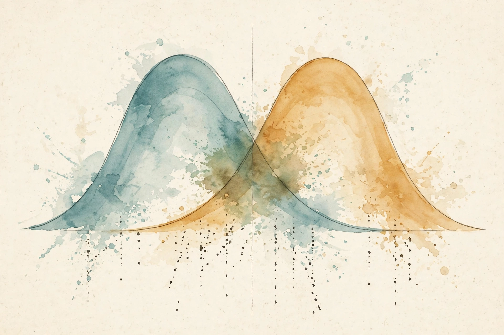

Narrated from the lesson documents · no lecture transcript exists
Three source blocks, one story. Block a: sample spaces, variables, and the IID promise. Block b: entropy, KL divergence, and maximum likelihood. Block c: the risk framework, Bayes, EM, and nonparametric methods. Uncertainty becomes a number, then a decision.
From the lesson The idea, and every number beside it, comes from the cited block of lessons/u04/lesson-04a-first-source-block.md, lesson-04b-second-source-block.md, or lesson-04c-third-source-block.md. The phrasing is the companion's.
Illustration Invented by the companion: an analogy, a toy with made-up values, or a what-if. Never lesson content.
companion Companion voice: the idea above the tag is from the lesson. The generalization below it is the companion's.
Provenance: the lessons are locally authored, with per-block lecture references (Lec 02 through Lec 27, Tutorials 2 through 9). No transcripts were inspected. All claim classes are lesson-local.

Section 1 · Block a, SB01
From the lessonSB01
Fair die: Omega = {1, .., 6}, X(omega) = omega. Event A = {X ≥ 5} = {5, 6}. P(A) = 2/6 = 0.3333. A random variable maps outcomes to numbers: the image becomes 0 or 1, and {X = 1} is the positive subset.
From the lessonSB01
The discipline: name the space of all outcomes first, then the variable that translates them, then the event as a subset. Probability is a ratio of counted outcomes only when the space is named.
Section 2 · Block a, SB02
From the lessonSB02
Bernoulli(0.3): PMF(0) = 0.7, PMF(1) = 0.3, sum 1.0. CDF: F(0) = 0.7, F(1) = 1.0, and F(1) - F(0) = PMF(1). Die: PMF(k) = 1/6 each, CDF(3) = 0.5. Three views of one behavior: the mass at each point, the density, and the running total.
Section 3 · Block a, SB03
From the lessonSB03
Two random variables share one table. Marginals: p_X = [0.5, 0.5], p_Y = [0.4, 0.6], measured. Conditional: P(Y=1|X=0) comes from the row [0.3, 0.2] normalized to [0.6, 0.4]. The Bayes check: P(X=0|Y=1) = 0.2/0.6 = 0.3333, measured.
| Y \ X | X = 0 | X = 1 | Marginal Y |
|---|---|---|---|
| Y = 0 | 0.3 | 0.1 | 0.4 |
| Y = 1 | 0.2 | 0.4 | 0.6 |
| Marginal X | 0.5 | 0.5 | 1.0 |
P(Y|X=0) normalizes the row [0.3, 0.2] to [0.6, 0.4]. P(X=0|Y=1) = 0.2/0.6 = 0.3333. Same table, different question.
Section 4 · Block a, SB04
From the lessonSB04
Fair die: E = 3.5, Var = 2.9166666666666665 = 35/12 exactly. Bernoulli(0.3): E = 0.3, Var = 0.3 × 0.7 = 0.21. Expectation is the probability-weighted center. Variance is the average squared distance from it.
From the lessonSB04
The die variance as 35/12 is exact rational arithmetic. The decimal 2.9166666666666665 is its float shadow. Keep both: the fraction for the math, the float for the machine.
Section 5 · Block a, SB05 to SB06
From the lessonSB05
A chest X-ray is a sample from a distribution: one draw, one image, standing for the population of all such images. What one data point means: it is a single draw, not the distribution.
From the lessonSB06
The IID assumption lets one sample stand for many: independent, identically distributed. The computed example: 8 draws from Bernoulli(0.3), seed 7: [0, 1, 1, 0, 0, 1, 0, 1]. Sample mean 0.5, measured, versus true 0.3. With n = 8 the sample mean misses by 0.2. The gap is the whole point. The product form gives P(draws) = 0.3⁴ × 0.7⁴ = 0.00194481. If draws were dependent, this product would be wrong.
From the lessonSB06
Predicted typical error: sqrt(0.3 × 0.7 / 8) = 0.1620185174601965. The observed 0.2 is in line. Small samples wobble. The formula says by how much.
Eight draws from Bernoulli(0.3) gave a mean of 0.5, off by 0.2. The predicted typical error was 0.1620. The miss was normal.
Section 6 · Block a, SB07 to SB08
From the lessonSB07
Given only the sample, how do we guess P? The computed example: p_hat = 0.75, log-likelihood -2.249340578475233, measured. The histogram on xs = [0.2, 0.5, 0.7, 1.1, 1.4, 1.6, 2.0, 2.3] with 4 bins on [0, 2.5] gives counts [2, 2, 2, 2], measured, edges [0, 0.625, 1.25, 1.875, 2.5].
From the lessonSB08
What is hard about learning from finite data? The n = 8 Bernoulli(0.3) sample mean is 0.5, error 0.2, against a predicted typical error of 0.1620. Finite data means finite resolution: the density you estimate is a blurry version of the truth, and the blur shrinks only as data grows.
Section 7 · Block b, SB09
From the lessonSB09
How surprised should you be, on average, by one draw? Fair coin: H = 0.6931471805599453 nats = 1 bit, measured. Biased [0.75, 0.25]: H = 0.5623351446188083 nats = 0.8113 bits, measured. Maximum entropy for 2 outcomes sits at [0.5, 0.5]. Any tilt lowers it.
From the lessonSB09 Fog meter: enter p for a two-outcome coin. The widget computes H in nats and bits with the lesson's formula.
p(heads):
H = -p log p - (1-p) log(1-p). Fair coin gives 0.6931 nats, 1 bit.
| Coin | H (nats) | H (bits) | Fog |
|---|---|---|---|
| [0.5, 0.5] | 0.6931471805599453 | 1.0 | thickest |
| [0.75, 0.25] | 0.5623351446188083 | 0.8113 | thinner |
Fair coin: 1 full bit of surprise. Tilted [0.75, 0.25]: 0.8113 bits. Certainty is the absence of information.
Section 8 · Block b, SB10 to SB11
From the lessonSB10
p = [0.7, 0.3], q = [0.5, 0.5]. D_KL(p||q) = 0.08228287850505181, measured. D_KL(q||p) = 0.08717669357238889, measured. KL is not symmetric: the price depends on which belief is true. The cross-entropy check: H(p) + D_KL(p||q) = 0.6931471805599452, and direct cross-entropy -sum p log q = 0.6931471805599453, measured. Agreement to float noise. The lesson notes this coincidence, both near 0.6931, is specific to these numbers, not a rule.
From the lessonSB11
If KL is the toll, which model pays the least? The grid scan finds the minimum at t = 0.7 with D_KL = 0.0, measured. The derivative solve gives t* = 0.7/1.0 = 0.7. The scan and the derivative agree: the best model is the truth.
D_KL(p||q) = 0.0823 but D_KL(q||p) = 0.0872. Swapping truth and belief changes the price.
Section 9 · Block b, SB12 to SB14
From the lessonSB12
Four coin flips land H, T, H, H. theta_hat = 0.75, measured. The log-likelihood at 0.75 is 3 log 0.75 + log 0.25 = -2.249340578475233. At 0.5 it is -2.772588722239781. The estimate beats the fair coin on its own data, as it must.
From the lessonSB13
Four numbers arrive: 2.1, 2.5, 1.9, 2.3. mu_hat = 2.2, sigma2_hat = 0.05, measured. The score at mu_hat: sum (d_i - mu_hat)/sigma² = -1.7763568394002505e-14, measured: numerical zero. The fitted bell is N(2.2, 0.05). The data picks the bell. MLE sets center and width.
From the lessonSB14
Counts over three outcomes are 4, 2, 4. p_hat = [0.4, 0.2, 0.4], measured, sums to 1.0. The log-likelihood at the estimate beats any tilted alternative: tilt to [0.5, 0.2, 0.3] and the log-likelihood drops. Counts become shares.
| Problem | Data | MLE | Check |
|---|---|---|---|
| coin bias | H T H H | theta 0.75 | ll -2.2493 beats -2.7726 |
| Gaussian | 2.1, 2.5, 1.9, 2.3 | N(2.2, 0.05) | score -1.78e-14 |
| 3 outcomes | counts 4, 2, 4 | [0.4, 0.2, 0.4] | sums to 1.0 |
Section 10 · Block b, SB15 to SB16
From the lessonSB15
The data has two coordinates. mu_hat = [0.0833, 0.1], measured. Sigma_hat = [[0.0847, 0.005], [0.005, 0.1]], measured. Eigenvalues [0.0832, 0.1015], measured: nearly round. Density of the point [0.1, 0.2] under the fitted Gaussian: 1.6458814703416096, measured.
From the lessonSB16
The data comes from two bells at once: p(x) = 0.5 N(x, mu=0, sigma=1) + 0.5 N(x, mu=5, sigma=1). The menu at three points: p(0) = 0.1995, the left hump. p(2.5) = 0.017528300493568537, measured, the valley. p(5) = 0.1995, the right hump. The valley value sits an order of magnitude below the humps.
Section 11 · Block c, SB17 to SB19
From the lessonSB17
The risk minimization framework asks three questions: what does the framework minimize, over what set, and with what loss. Risk is expected loss over the true distribution. Empirical risk is the average over the sample. The framework minimizes empirical risk over a hypothesis set and hopes it tracks the true risk.
From the lessonSB18
Among all possible rules, the Bayes classifier has the smallest risk. The computed example, 2026-10-06: Bayes with threshold x = 1 gives error 0.1587. Threshold x = 1.5 gives error 0.1877. The off-center threshold pays 0.0290 extra. The Bayes rule is the floor.
From the lessonSB19
The worked ERM example walks the framework on a toy: pick the hypothesis set, compute empirical risk per candidate, take the minimizer. The lesson's moral: ERM is only as good as the set you minimize over and the sample you average on.
Error 0.1587 at the Bayes threshold of 1. Error 0.1877 at 1.5. The 0.0290 gap is the price of being off-center, and no rule goes below 0.1587.
Section 12 · Block c, SB20
From the lessonSB20
The classifier outputs scores: s = [0.1, 0.35, 0.4, 0.6, 0.8], y = [0, 0, 1, 1, 1]. Where do you cut? The ROC points (0,0), (0, 1/3), (0, 2/3), (0.5, 1), (1, 1) trace the tradeoff curve. AUC = 0.9167 by the trapezoid rule, computed 2026-10-06. AUC is the probability that a random positive outscores a random negative.
From the lessonSB20
Minmax centers the worst case. Neyman-Pearson obeys a false-alarm budget. Accuracy hides the tradeoff. The ROC table shows it. Calibration is the honest choice of this dial on held-out scores, not on the training scores that produced them.
From the lessonSB20 Threshold dial: move the cutoff across the lesson's five scores and watch TPR against FPR.
Scores [0.1, 0.35, 0.4, 0.6, 0.8], labels [0, 0, 1, 1, 1]. Predict 1 when score ≥ threshold.
Section 13 · Block c, SB21 to SB24
From the lessonSB21
What if each point came from one of several bells? Six points: [0.2, -0.3, 0.1, 5.1, 4.8, 5.3]. The incomplete log-likelihood at mu = [0, 5] is -9.8125, computed 2026-10-06. The three left points each contribute about log(0.5 × 0.39), the three right points the mirror.
From the lessonSB22
The log sits outside the sum and blocks direct maximization. EM alternates: guess the assignments, then fit the bells. The computed run, 2026-10-06: init mu 1.0000 and 4.0000, log-likelihood -13.0089. Iter 1: mu 0.0026 and 5.0635, sigma² 0.0592, ll -3.4450. Iter 2: mu 0.0000 and 5.0667, sigma² 0.0444, ll rising. Iter 20: mu 0.0000 and 5.0667, ll -3.3320. One claim: the likelihood never decreases.
From the lessonSB23
The same algorithm from two starts reaches two destinations. Start A [1, 4]: final mu [0.0000, 5.0667], ll -3.3320. Start B [2.5, 2.6]: final mu [2.1213, 2.9460], ll -14.1109. The start decides the destination. Both likelihood sequences never decrease: B rose -24.86 to -14.11.
From the lessonSB24
MAP adds a prior. MLE 7/10 = 0.7000. MAP with Beta(2,2): 0.6667. Posterior mean: 0.6429. The prior pulls gently. And identifiability: loglik at mu = [0,5] is -9.8125, at mu = [5,0] is -9.8125. The swap changes nothing. Labels are arbitrary.
| Step | mu_1 | mu_2 | sigma² | log-likelihood |
|---|---|---|---|---|
| init | 1.0000 | 4.0000 | 1.0000 | -13.0089 |
| iter 1 | 0.0026 | 5.0635 | 0.0592 | -3.4450 |
| iter 2 | 0.0000 | 5.0667 | 0.0444 | rising |
| iter 20 | 0.0000 | 5.0667 | small | -3.3320 |
Start A ends at log-likelihood -3.3320. Start B ends at -14.1109. Both climbs never decrease. They climb different hills.
Section 14 · Block c, SB25 to SB26
From the lessonSB25
Can you estimate a density without naming its family? The Parzen window drops a small bell on every point and averages. Computed 2026-10-06: with xp = [0.5, 1.5, 2.5, 4.0], h = 0.5, p_hat(1.5) = 0.2535. No Gaussian was assumed. The data drew its own curve.
From the lessonSB26
The simplest classifier with zero training: nearest neighbors. xtr = [0, 1, 2, 3], ytr = [0, 0, 1, 1]. 1-NN train error: 0.0, computed 2026-10-06. The neighbor of 2.4 is x = 2. The 3-NN vote at 1.5: 1/3 positive, predicts 0. Memory is the model.
Parzen p_hat(1.5) = 0.2535 with no named family. 1-NN gets 0.0 train error with no parameters. Both memorize. Neither generalizes for free.
Wisdom index